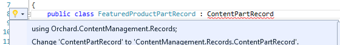
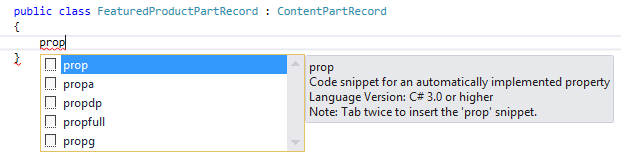
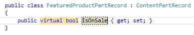
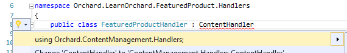
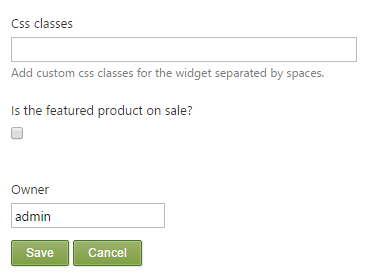
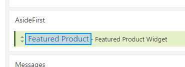
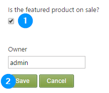
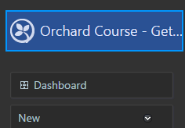
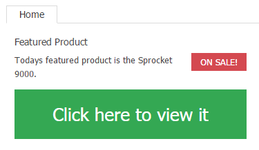

Introduction
This is part two of a four part course. It will get you started with a gentle introduction to extending Orchard at the code level. You will build a very simple module which contains a widget that shows an imaginary featured product.
It will teach you some of the basic components of module development and also encourage you to use best-practices when developing for Orchard.
If you haven't read the previous part of this course then you can go back to the overview to learn about the Getting Started with Modules course.
Expanding the widget to make it more dynamic
In the first version of the widget we took the bare minimum of steps that we could in order to get something up and running.
This meant we missed out a few classes that would be in a normal data-driven module and some of the classes we did add were pretty much empty.
Now that you understand the basic workflow of building a module we're going to go back and take a second look at it, adding in some new classes and expanding out the Widget.
By the time we have finished with this part we will have made the widget more dynamic. To achieve this goal we are going to:
-
Add a
Booleanproperty to signify if the item is on sale. -
Dip into the Orchard API to hide the widget if the page we are viewing is the featured product.
Getting setup for the lesson
You should have already completed part one of this course before you move on to this part. This means you should have a copy of Orchard with the completed module work.
If you have the original Solution and module files available then:
-
Open Visual Studio
-
Open the Solution you created in the first part of the course
If for some reason you don't have these files you can play catch-up by following these steps:
-
Follow the setting up for a lesson guide.
-
Download the completed module source code from part 1.
-
Extract the archive into the modules directory at
.\src\Orchard.Web\Modules\. -
Run Orchard by pressing
Ctrl-F5, go to the admin dashboard, select Modules from the navigation menu and enable the module.
Now we can begin the lesson by starting to build in database functionality to the Featured Product module.
Add a ContentPartRecord class
In the first part of this course we created a simple ContentPart class called FeaturedProductPart. Because we weren't storing anything at the time this class was just an empty placeholder.
We are going to go back and give it a property to store some data in the next section but first we need to create a ContentPartRecord class.
The ContentPartRecord class is used by Orchard to store content part data in a database.
Let's add the class to the module and then start wiring in the Boolean IsOnSale property:
-
Locate your FeaturedProduct module in the
Solution Explorer,Right clickon theModelsfolder and chooseAdd,Class... -
In the
Add New Itemdialog enterFeaturedProductPartRecordin to theName:field and pressAdd. -
Derive the class from
ContentPartRecord:public class FeaturedProductPartRecord : ContentPartRecord -
Add the namespace by pressing
Ctrl-.:
-
Add a public property to the class. Place your cursor in the main body of the class. Type
propthen press theTabkey twice:
This will insert a code snippet for an automatically implemented public property.
-
In the first placeholder (you can just start typing and it will replace the
intautomatically) set it tovirtual boolthen pressTab, typeIsOnSaleand pressEnterto complete the property.
The important thing to remember for your ContentPartRecord classes is that each of the properties you want to store in the database should be marked with the virtual keyword. This is so that NHibernate, the database system used by Orchard, can inject its underlying plumbing.
You should now end up with a file called .\Models\FeaturedProductPartRecord.cs with the contents:
using Orchard.ContentManagement.Records;
namespace Orchard.LearnOrchard.FeaturedProduct.Models {
public class FeaturedProductPartRecord : ContentPartRecord {
public virtual bool IsOnSale { get; set; }
}
}
Update the ContentPart
You now have a class that will provide the interface between your database and your content part (FeaturedProductPartRecord).
The first change to the content part will be to let it know about this record class. Then we will add a public property which mirrors the data class and specifies how it will store its data:
-
Open the
ContentPartfile located in.\Models\FeaturedProductPart.cs -
Add a generic type parameter to the FeaturedProductPart class by changing this:
public class FeaturedProductPart : ContentPartTo this:
public class FeaturedProductPart : ContentPart<FeaturedProductPartRecord> -
Add the public property to the class:
[DisplayName("Is the featured product on sale?")] public bool IsOnSale { get { return Retrieve(r => r.IsOnSale); } set { Store(r => r.IsOnSale, value); } } -
Add the namespace for the
DisplayNameattribute
The DisplayName attribute is a feature provided by ASP.NET MVC. Later on when we build the editor view for the admin dashboard it will use this phrase instead of simply displaying "IsOnSale"
You should now end up with a FeaturedProductPart.cs file that looks like this:
using System.ComponentModel;
using Orchard.ContentManagement;
namespace Orchard.LearnOrchard.FeaturedProduct.Models {
public class FeaturedProductPart : ContentPart<FeaturedProductPartRecord> {
[DisplayName("Is the featured product on sale?")]
public bool IsOnSale {
get { return Retrieve(r => r.IsOnSale); }
set { Store(r => r.IsOnSale, value); }
}
}
}
The Retrieve() and Store() methods come when you inherit from ContentPart<T>.
Under the hood your data is stored in two places. There is the underlying database and something called the infoset.
Understanding data storage in Orchard
Orchard provides an incredibly modular architecture. The way it achieves this is that it breaks everything up into their own little components called content parts. We are busy building one of these content parts right now. Orchard composes these together at run-time to form content types, such as the widget we are working on.
In order to store all of these little pieces of data in the database they are split up into many tables. There can be a lot of SQL JOIN's involved with pulling a content item out of the database. This means things aren't always as fast as they could be.
To minimize these effects a secondary data cache is kept. All of the different content parts are encoded into XML and stored in a single column inside a database table. For example, our widget looks something like this:
<Data>
<IdentityPart Identifier="0e8f0d480f0d4d4bb72ad3d0c756a0d4" />
<CommonPart CreatedUtc="2015-09-24T19:37:19.5819846Z"
ModifiedUtc="2015-09-24T19:37:19.6720488Z"
PublishedUtc="2015-09-24T19:37:19.6810555Z" />
<WidgetPart RenderTitle="true" Title="Featured Product" Position="1"
Zone="AsideFirst" Name="" CssClasses="" />
</Data>
So instead of pulling data from three different tables (IdentityPart, CommonPart and WidgetPart) Orchard just selects the single XML block and checks in there. The Retrieve() and Store() methods automatically keep this data and the individual database tables in sync for you.
Why not just use the XML infoset all the time? If you need to sort the data or filter it then its actually quicker to do this all within the SQL database server rather than extracting everything and sorting / filtering it after.
In certain scenario's you might not need one or the other of these data stores. There are more advanced approaches that you can take in these situations but that's an advanced topic for a later guide.
This changeover was implemented in Orchard v1.8 and was known as "The Shift". Bertrand Le Roy has written more about this on his blog.
Upgrading using a data migration
In the first part of this course we created a Migrations.cs class file. Inside it we wrote the Create() method which returned 1. When Orchard had finished running the method it stored that 1 in the database.
Now that we want to make some changes to our modules data storage (we want to add in a table for the data to be stored in) we can add a new method UpdateFrom1(). Orchard will automatically find this method the next time the site is loaded and run this updated data migration.
At the end of the update method we will return 2. This means in the future if we want to make further changes we could add an UpdateFrom2() method. We can keep returning a number one higher than the previous to update as many times as we need.
-
Open the
Migrations.csfile in the root folder of the module. -
Beneath the
Create()method, add in the following method:public int UpdateFrom1() { SchemaBuilder.CreateTable(typeof(FeaturedProductPartRecord).Name, table => table .ContentPartRecord() .Column<bool>("IsOnSale")); return 2; }
To start off with we are using the SchemaBuilder class to create a new table. The first parameter is the table name. This should match the ContentPartRecord we built.
Instead of pulling it out using
typeof().Nameyou could pass in a string such asCreateTable("FeaturedProductsPartRecord", ...);but that leaves you open to introducing small typos into the code - like I did just then.Did you notice the extra
sI accidentally typed into the table name?If you make a mistake like this then you won't get an exception. Orchard will still run but your data will be saved to the wrong table creating hard to find bugs.
The ContentPartRecord() call is just a simple shorthand to add in the id column. If you look in the definition (just place your cursor in the method in Visual Studio and press F12) you will see it simply adds an extra Column<> into the chain:
Column<int>("Id", column => column.PrimaryKey().NotNull());
We then add our column with a data type bool and a name IsOnSale which matches our property on the record class. NHibernate will automatically match the name of the property on the record class with the column in the database.
Bonus Exercise: Look around in the
Migrations.csfiles located in the other built-in modules for many examples of the things you can do with this class.To do this just select the
Search Solution Explorertextbox at the top of theSolution Exploreror pressCtrl-;. When it's selected just typeMigrations.csin and it will filter out all of themigrations.csfiles in the solution.
You should now end up with a Migrations.cs file that looks like this:
using Orchard.ContentManagement.MetaData;
using Orchard.Core.Common.Models;
using Orchard.Data.Migration;
using Orchard.LearnOrchard.FeaturedProduct.Models;
using Orchard.Widgets.Models;
namespace Orchard.LearnOrchard.FeaturedProduct {
public class Migrations : DataMigrationImpl {
public int Create() {
ContentDefinitionManager.AlterTypeDefinition(
"FeaturedProductWidget", cfg => cfg
.WithSetting("Stereotype", "Widget")
.WithPart(typeof(FeaturedProductPart).Name)
.WithPart(typeof(CommonPart).Name)
.WithPart(typeof(WidgetPart).Name));
return 1;
}
public int UpdateFrom1() {
SchemaBuilder.CreateTable(typeof(FeaturedProductPartRecord).Name,
table => table
.ContentPartRecord()
.Column<bool>("IsOnSale"));
return 2;
}
}
}
Add a handler
The plumbing for connecting the module code to the database is almost complete. The last thing to do is to register a StorageFilter for the ContentPartRecord.
The StorageFilter class takes care of persisting the data from repository object to the database. In this case it's the FeaturedProductPartRecord class that needs registering.
You do this registration inside the Handler class, although that's not it's only use. You can think of the handler like a filter in ASP.NET MVC. It's a piece of code that is meant to run when specific events happen in the application, but that are not specific to a given content type.
For example, you could build an analytics module that listens to the Loaded event in order to log usage statistics.
If you're curious, you can see what event handlers you can override in your own handlers by examining the source code for
ContentHandlerBaseand reading the understanding content handlers guide.
The handler you need in this module is not going to be very complex, but it will implement some plumbing that is necessary to set up the persistence of the part:
-
In the
Solution Explorer, right click on theOrchard.LearnOrchard.FeaturedProductproject and chooseAdd,New Folderand create a new folder calledHandlers. -
Now right click on the
Handlersfolder and chooseAdd,Class.... -
In the
Add New Itemdialog enterFeaturedProductHandlerin to theName:field and pressAdd. -
Derive the class from
ContentHandler:public class FeaturedProductHandler : ContentHandler -
Add the namespace by pressing
Ctrl-.:
-
You now need to add in the standard boilerplate handler constructor code which wires up the
StorageFilterto the repository:public FeaturedProductHandler( IRepository<FeaturedProductPartRecord> repository) { Filters.Add(StorageFilter.For(repository)); } -
Add the namespace for the
FeaturedProductPartRecordand then theIRepository<>.
You should now end up with a FeaturedProductHandler.cs file that looks like this:
using Orchard.ContentManagement.Handlers;
using Orchard.Data;
using Orchard.LearnOrchard.FeaturedProduct.Models;
namespace Orchard.LearnOrchard.FeaturedProduct.Handlers {
public class FeaturedProductHandler : ContentHandler {
public FeaturedProductHandler(
IRepository<FeaturedProductPartRecord> repository) {
Filters.Add(StorageFilter.For(repository));
}
}
}
Update the driver to support an editor view
This time through with the driver it's going to get it's other two core boilerplate methods.
The first is a method called Editor() which is used to build the shape which will display the edit interface in the admin dashboard. This is designed to be used with a HTTP GET request.
The second is another Editor() overload which takes the submitted information from the first and attempts to pass that information back into the database. This is designed to be used with a HTTP POST request.
-
Open the
FeaturedProductDriver.csclass which is in the.\Drivers\folder of the module project. -
Below the
Display()method, paste in this block of code:protected override DriverResult Editor(FeaturedProductPart part, dynamic shapeHelper) { return ContentShape("Parts_FeaturedProduct_Edit", () => shapeHelper.EditorTemplate( TemplateName: "Parts/FeaturedProduct", Model: part, Prefix: Prefix)); } protected override DriverResult Editor(FeaturedProductPart part, IUpdateModel updater, dynamic shapeHelper) { updater.TryUpdateModel(part, Prefix, null, null); return Editor(part, shapeHelper); } -
Add the namespace for
IUpdateModelusing theCtrl-.keyboard shortcut.
As explained above, the first Editor() method is for displaying an edit form in the admin dashboard. You can see that it returns a content shape called Parts_FeaturedProduct_Edit. We will use this information later on when updating the placement.info.
The way it does it is by using the provided shapeHelper factory to create a new shape for the current content part (our FeaturedProductPart with the bool IsOnSale property). This is the same shape factory we used in our Display() method the first time around.
For editor views you use the .EditorTemplate() method and pass in the configuration values. By default, Orchard places all of its editor views in the EditorTemplates folder. Combining this with the TemplateName parameter we know that we will be creating a view called .\Views\EditorTemplates\Parts\FeaturedProduct.cshtml in the next section.
The Model parameter passes in the data, in our case a data structure that includes the IsOnSale value. This will be accessible inside the Razor view and we will use it to determine what to display.
The Prefix is a text value that is prepended to the names of the shapes internally. This makes sure that the names are unique. The Prefix value that we supply is a method that comes with deriving from ContentPartDriver that just uses a typeof() to get the name of the class:
protected virtual string Prefix { get { return typeof(TContent).Name; } }
In more complicated projects this method can combine multiple shapes together and return them as a single
CombinedShape.
The second overload of the Editor() method is used when the administrator submits a page that has the EditorTemplate form inside it. You can see the bare minimum code here which just attempts to pass the form data to the correct internal model. As long as it doesn't have any errors the model will then be persisted to the database automatically by Orchard.
It then calls the original POST version of the Editor() method with the form data already included in the model. This means that after the form has been submitted and the page loads up again it will have the form fields pre-populated with the data that has been entered.
In more complicated projects you will see further processing being completed after the
TryUpdateModel()call.Don't forget, browsing the Orchard source code is an invaluable tool to learn more about its inner workings. A good reference module for both this and the last tip is the
WidgetPartDriverlocated in.\Orchard.Web\Modules\Orchard.Widgets\Drivers\WidgetPartDriver.cs. It shows both the combining of shapes and extra validation in the editor update method.
You should now end up with a FeaturedProductDriver.cs file that looks like this:
using Orchard.ContentManagement;
using Orchard.ContentManagement.Drivers;
using Orchard.LearnOrchard.FeaturedProduct.Models;
namespace Orchard.LearnOrchard.FeaturedProduct.Drivers {
public class FeaturedProductDriver : ContentPartDriver<FeaturedProductPart> {
protected override DriverResult Display(FeaturedProductPart part, string displayType, dynamic shapeHelper) {
return ContentShape("Parts_FeaturedProduct", () => shapeHelper.Parts_FeaturedProduct());
}
protected override DriverResult Editor(FeaturedProductPart part, dynamic shapeHelper) {
return ContentShape("Parts_FeaturedProduct_Edit",
() => shapeHelper.EditorTemplate(
TemplateName: "Parts/FeaturedProduct",
Model: part,
Prefix: Prefix));
}
protected override DriverResult Editor(FeaturedProductPart part, IUpdateModel updater, dynamic shapeHelper) {
updater.TryUpdateModel(part, Prefix, null, null);
return Editor(part, shapeHelper);
}
}
}
Add the EditorTemplate view
The editor template view uses the same underlying technology as the front-end view, a Razor view template. Orchard keeps all of its editor templates inside the EditorTemplates folder of the Views folder.
When you're building the administration form you will normally use many of the ASP.NET MVC helper methods such as @Html.CheckBoxFor(model => model.IsOnSale).
For this reason you will find that editor template views are strongly-typed views and start off with the @model command. This will mean that you get the IntelliSense while using model to build the forms.
The editor form for this module will have a single section to represent the Boolean value that we have added to the model. When building the view you should wrap each form item inside a <fieldset> tag.
Add the EditorTemplate view by following these steps:
-
Add a new folder inside the
Viewsfolder calledEditorTemplates(Right clickon theViewfolder in the solution explorer, clickAdd,New Folderand typeEditorTemplates). -
Add another folder inside that called
Parts. -
Add a new
.cshtmlRazor view within thePartsfolder calledFeaturedProduct.cshtml -
Within the
FeaturedProduct.cshtmlview file add the following HTML markup:@model Orchard.LearnOrchard.FeaturedProduct.Models.FeaturedProductPart <fieldset> <div class="editor-label"> @Html.LabelFor(model => model.IsOnSale) </div> <div class="editor-field"> @Html.CheckBoxFor(model => model.IsOnSale) @Html.ValidationMessageFor(model => model.IsOnSale) </div> </fieldset>
When you edit the widget in the admin dashboard you will see a simple edit form:

You can see that it is automatically pulling through the [DisplayName] attribute value that we used earlier.
Update the front-end view
Now that we have gone through all the steps to surface the IsOnSale property we can finally use it to make a decision in the front-end view.
If you have experience with normal ASP.NET MVC Razor views you will know that you can blend your C# code in with the HTML including features such as using conditional statements to control the visibility of certain sections.
We will now update the module to show a red "ON SALE!" box in the widget when IsOnSale is set to true:
-
Open up the view file located at
.\Views\Parts\FeaturedProduct.cshtml -
Copy this CSS snippet into the
<style>block at the top of the view:.sale-red { background-color: #d44950; color: #fff; float: right; padding: .25em 1em; display: inline; } -
Add this snippet in to the main body, above the first
<p>tag:@if (Model.ContentPart.IsOnSale) { <p class="sale-red">ON SALE!</p> }
You will notice that this view doesn't feature an @model directive at the top. This is because the model is a dynamic class which contains the content part information and various other properties supplied by Orchard. This means that you can't define it in the view beforehand as the class isn't a named type and IntelliSense doesn't know what properties are going to be available at run-time.
Because of this you are on your own when typing up the views. It can be helpful to add breakpoints to inspect the structure of the model at run-time if you don't know what value you're looking for.
The @if (Model.ContentPart.IsOnSale) { } line simply checks if the value is true and if so it dynamically shows the HTML contained within the curly braces, displaying a red "ON SALE!" banner within the widget.
You should now have a FeaturedProduct.cshtml file that looks like this:
<style>
.btn-green {
padding: 1em;
text-align: center;
color: #fff;
background-color: #34A853;
font-size: 2em;
display: block;
}
.sale-red {
background-color: #d44950;
color: #fff;
float: right;
padding: .25em 1em;
display: inline;
}
</style>
@if (Model.ContentPart.IsOnSale) {
<p class="sale-red">ON SALE!</p>
}
<p>Todays featured product is the Sprocket 9000.</p>
<p><a href="/sprocket-9000" class="btn-green">Click here to view it</a></p>
Update the placement.info
Before we run the module to see our updated widget in action we need to make a change to the placement.info file. The module should run without errors at this stage but until we set up a <place> for the editor template you won't be able to configure the IsOnSale variable.
-
Open the
placement.infofile located in the root folder of the module. -
Within the
<placements>tag add the following<place>tag:<Place Parts_FeaturedProduct_Edit="Content:7.5"/>The order of the
<place>tags doesn't matter.
The name of the place that we are targeting Parts_FeaturedProduct_Edit was defined in the driver class when we configured it in the EditorTemplate() shape factory method. The shape will be injected into the local zone named "content" with a weight of 7.5. In this case the weight of 7.5 will move it down to the bottom of the form.
When developing your modules it is common to forget this last stage. While you might not always be able to remember to update the
placement.infobefore you run, you should take a moment to remember the solution.Whenever the shape isn't displayed where it was expected, think
placement.infofirst.
You should now have a placement.info file that looks like this:
<Placement>
<Place Parts_FeaturedProduct="Content:1"/>
<Place Parts_FeaturedProduct_Edit="Content:7.5"/>
</Placement>
Trying the module out in Orchard
Great! You have completed another stage of the development. Now its time to load the website up in the browser and play with the new feature you just built.
-
Within Visual Studio, press
Ctrl-F5on your keyboard to start the website without debugging enabled (its quicker and you can attach the debugger later if you need it). -
Navigate to the admin dashboard.
-
Click
Widgetsin the side menu. -
If you follow the guide correctly in part 1, you should see your
Featured Product Widgetin the list underAsideFirst. Click on the wordFeatured Product(this may vary depending the title you entered when you set the widget up):
-
The
Edit Widgetpage will be displayed. Scroll down to the bottom to find the setting we added:
Tick the checkbox.
-
Click
Save. -
Navigate back to the homepage of the website by clicking on the site title in the top corner of the admin dashboard:

You should now see your product is marked as being on sale:

Bonus Exercise: Go back into the admin dashboard, uncheck the setting, save and come back again to see how the it no longer shows as being on sale.
Download the code for this lesson
You can download a copy of the module so far at this link:
To use it in Orchard simply extract the archive into the modules directory at .\src\Orchard.Web\Modules\. If you already have the module installed from a previous part then delete that folder first.
For Orchard to recognize it the folder name should match the name of the module. Make sure that the folder name is
Orchard.LearnOrchard.FeaturedProductand then the modules files are located directly under that.
Conclusion
This part of the course has expanded your knowledge to touch on some of the data storage and content management features in Orchard.
You have added in the common module development classes that we didn't cover in the first part. You've experienced using the data migrations to incrementally update your data. You've also seen the basics of creating an admin interface and using it to update the configuration settings of a widget.
You can now see the core process of adding a variable to your module and then implementing it, working successively up the layers to surface it in the admin dashboard and the front-end view.
In the next part of the getting started with modules course we will look at working with content items at the code level.